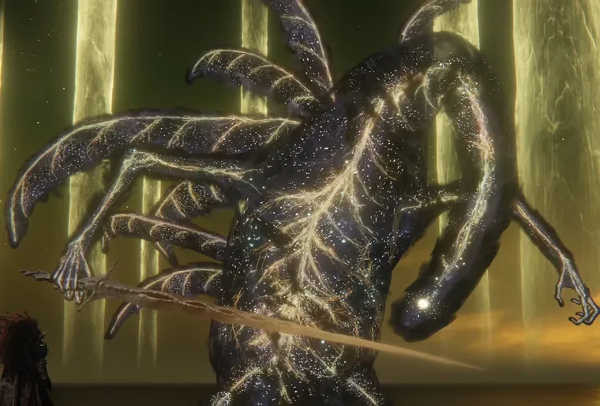
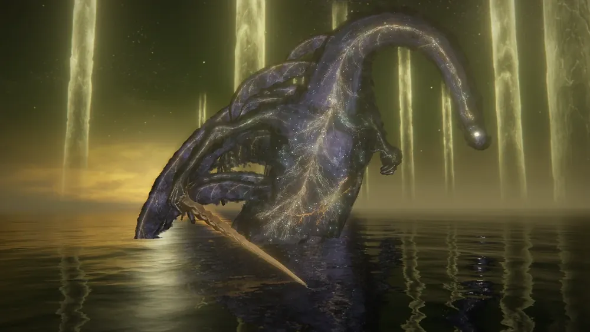
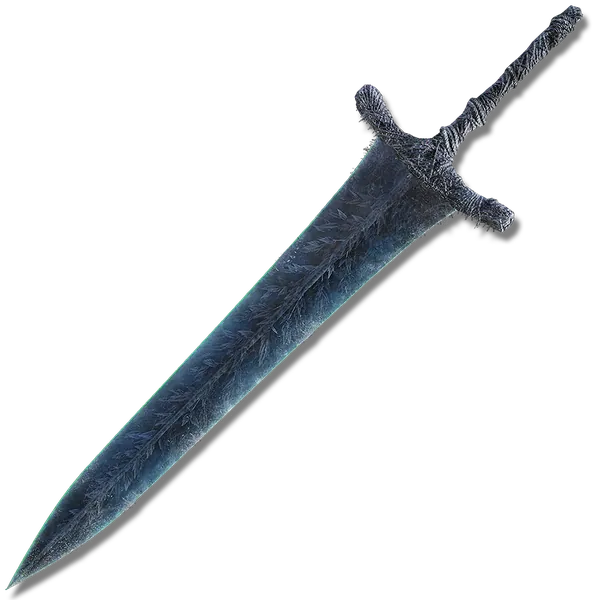
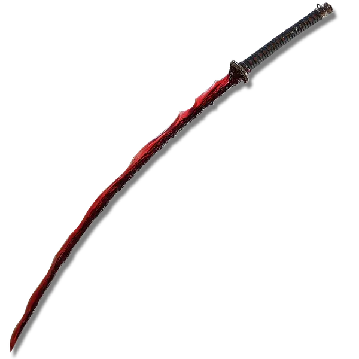

The Story
How the Elden Beast fits into the Golden Order, the Greater Will, and the ending of the game.
Read the loreThe true final boss of Elden Ring — a divine vessel of the Greater Will and the living embodiment of the Elden Ring itself. This codex covers who it is, the story behind it, and exactly how to bring it down.

After you defeat Radagon of the Golden Order at the foot of the Erdtree, the screen does not fade to victory. Radagon's body is pulled into the sky and consumed by an enormous, ethereal creature of gold and starlight: the Elden Beast. It is the final guardian of the Elden Ring and the last thing standing between you and the title of Elden Lord.
The Elden Beast is not a god in the way the demigods are. It is a vessel — a servant of the Greater Will, sent to the Lands Between to carry the Elden Ring as a divine order made flesh. Its body drifts like a whale through the void, trailing golden dust, and it attacks almost entirely with Holy damage.

How the Elden Beast fits into the Golden Order, the Greater Will, and the ending of the game.
Read the lore
Phase-by-phase strategy, preparation tips, and an interactive list of the weapons that work best.
Open the guide
Beat the Beast your own way? Tell other Tarnished what worked for you and read their tips.
Leave feedback